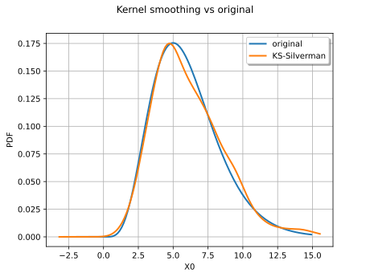
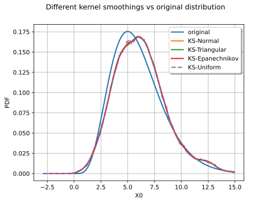
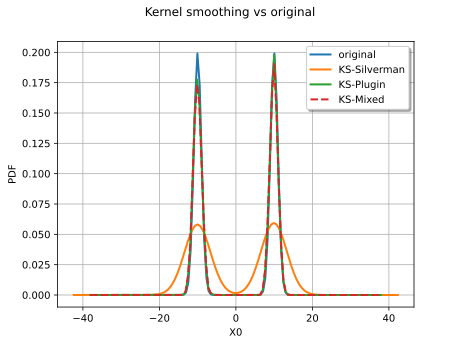
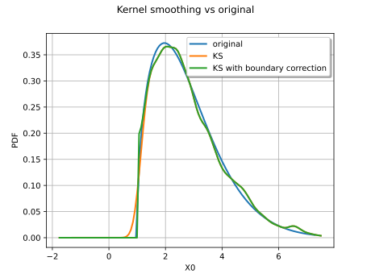
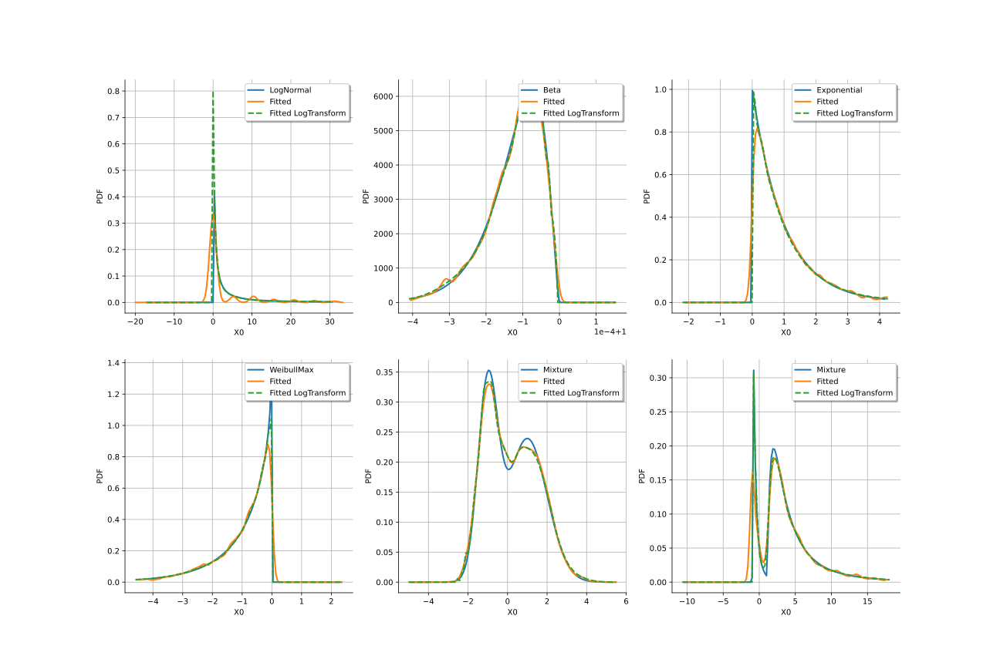

Note
Go to the end to download the full example code.
Fit a non parametric distribution¶
In this example we are going to estimate a non parametric distribution using the kernel smoothing method. After a short introductory example we focus on a few basic features of the API:
kernel selection
bandwidth estimation
an advanced feature such as boundary corrections
import openturns as ot
import openturns.viewer as otv
An introductory example¶
We create the data from a Gamma distribution :
distribution = ot.Gamma(6.0, 1.0)
sample = distribution.getSample(800)
We define the kernel smoother and build the smoothed estimate.
We can draw the original distribution vs the kernel smoothing.
graph = distribution.drawPDF()
graph.setTitle("Kernel smoothing vs original")
kernel_plot = estimated.drawPDF().getDrawable(0)
graph.add(kernel_plot)
graph.setLegends(["original", "KS"])
graph.setLegendPosition("upper right")
view = otv.View(graph)

We can obtain the bandwdth parameter :
print(kernel.getBandwidth())
[0.529581]
We now compute a better bandwitdh with the Silverman rule.
[0.639633]
The new bandwidth is used to regenerate another fitted distribution :
graph = distribution.drawPDF()
graph.setTitle("Kernel smoothing vs original")
kernel_plot = estimated.drawPDF().getDrawable(0)
graph.add(kernel_plot)
graph.setLegends(["original", "KS-Silverman"])
graph.setLegendPosition("upper right")
view = otv.View(graph)

The Silverman rule of thumb to estimate the bandwidth provides a better estimate for the distribution. We can also study the impact of the kernel selection.
Choosing a kernel¶
We experiment with several kernels to perform the smoothing :
the standard Normal kernel
the triangular kernel
the Epanechnikov kernel
the uniform kernel
We first create the data from a Gamma distribution :
distribution = ot.Gamma(6.0, 1.0)
sample = distribution.getSample(800)
The definition of the Normal kernel :
The definition of the Triangular kernel :
The definition of the Epanechnikov kernel :
The definition of the Uniform kernel :
We finally compare all the distributions :
graph = distribution.drawPDF()
graph.setTitle("Different kernel smoothings vs original distribution")
graph.setGrid(True)
kernel_estimatedNormal_plot = estimatedNormal.drawPDF().getDrawable(0)
graph.add(kernel_estimatedNormal_plot)
kernel_estimatedTriangular_plot = estimatedTriangular.drawPDF().getDrawable(0)
graph.add(kernel_estimatedTriangular_plot)
kernel_estimatedEpanechnikov_plot = estimatedEpanechnikov.drawPDF().getDrawable(0)
graph.add(kernel_estimatedEpanechnikov_plot)
kernel_estimatedUniform_plot = estimatedUniform.drawPDF().getDrawable(0)
kernel_estimatedUniform_plot.setLineStyle("dashed")
graph.add(kernel_estimatedUniform_plot)
graph.setLegends(
["original", "KS-Normal", "KS-Triangular", "KS-Epanechnikov", "KS-Uniform"]
)
view = otv.View(graph)

We observe that all the kernels produce very similar results in practice. The Uniform kernel may be seen as the worst of them all while the Epanechnikov one is said to be a good theoritical choice. In practice the standard Normal kernel is a fine choice. The most important aspect of kernel smoothing is the choice of the bandwidth.
Bandwidth selection¶
We reproduce a classical example of the literature : the fitting of a bimodal distribution. We will show the result of a kernel smoothing with different bandwidth computation :
the Silverman rule
the Plugin bandwidth
the Mixed bandwidth
We define the bimodal distribution and generate a sample out of it.
X1 = ot.Normal(10.0, 1.0)
X2 = ot.Normal(-10.0, 1.0)
myDist = ot.Mixture([X1, X2])
sample = myDist.getSample(2000)
We now compare the fitted distribution :
graph = myDist.drawPDF()
graph.setTitle("Kernel smoothing vs original")
With the Silverman rule :
With the Plugin bandwidth :
kernelPB = ot.KernelSmoothing()
bandwidthPB = kernelPB.computePluginBandwidth(sample)
estimatedPB = kernelPB.build(sample, bandwidthPB)
kernelPB_plot = estimatedPB.drawPDF().getDrawable(0)
graph.add(kernelPB_plot)
With the Mixed bandwidth :
kernelMB = ot.KernelSmoothing()
bandwidthMB = kernelMB.computeMixedBandwidth(sample)
estimatedMB = kernelMB.build(sample, bandwidthMB)
kernelMB_plot = estimatedMB.drawPDF().getDrawable(0)
kernelMB_plot.setLineStyle("dashed")
graph.add(kernelMB_plot)
graph.setLegends(["original", "KS-Silverman", "KS-Plugin", "KS-Mixed"])
graph.setLegendPosition("upper right")
view = otv.View(graph)

As expected the Silverman seriously overfit the data and the other rules are more to the point.
Boundary corrections¶
We detail here an advanced feature of the kernel smoothing, the boundary corrections.
We consider a Weibull distribution :
myDist = ot.WeibullMin(2.0, 1.5, 1.0)
We generate a sample from the defined distribution :
sample = myDist.getSample(2000)
We draw the exact Weibull distribution :
graph = myDist.drawPDF()
We use two different kernels :
a standard Normal kernel
the same kernel with a boundary correction
The first kernel without the boundary corrections.
The second kernel with the boundary corrections.
We compare the estimated PDFs :
graph.setTitle("Kernel smoothing vs original")
kernel1_plot = estimated1.drawPDF().getDrawable(0)
graph.add(kernel1_plot)
kernel2_plot = estimated2.drawPDF().getDrawable(0)
graph.add(kernel2_plot)
graph.setLegends(["original", "KS", "KS with boundary correction"])
graph.setLegendPosition("upper right")
view = otv.View(graph)

The boundary correction made has a remarkable impact on the quality of the estimate for the small values.
Log-transform treatment¶
We finish this example on another advanced feature of the kernel smoothing: the log-transform treatment. This treatment is highly suited to skewed distributions, which are all challenging for kernel smoothing.
We consider several distributions which have significant skewness:
distCollection = [
ot.LogNormal(0.0, 2.5),
ot.Beta(20000.5, 2.5, 0.0, 1.0),
ot.Exponential(),
ot.WeibullMax(1.0, 0.9, 0.0),
ot.Mixture([ot.Normal(-1.0, 0.5), ot.Normal(1.0, 1.0)], [0.4, 0.6]),
ot.Mixture(
[ot.LogNormal(-1.0, 1.0, -1.0), ot.LogNormal(1.0, 1.0, 1.0)], [0.2, 0.8]
),
]
For each distribution, we do the following steps:
we generate a sample of size 5000,
we fit a kernel smoothing distribution without the log-transform treatment,
we fit a kernel smoothing distribution with the log-transform treatment,
we plot the real distribution and both non parametric estimations.
Other transformations could be used, but the Log-transform one is quite effective. If the skewness is moderate, there is almost no change wrt simple kernel smoothing. But if the skewness is large, the transformation performs very well. Note that, in addition, this transformation performs an automatic boundary correction.
grid = ot.GridLayout(2, 3)
ot.RandomGenerator.SetSeed(0)
for i, distribution in enumerate(distCollection):
sample = distribution.getSample(5000)
# We draw the real distribution
graph = distribution.drawPDF()
graph.setLegends([distribution.getClassName()])
# We choose the default kernel
kernel = ot.KernelSmoothing()
# We activate no particular treatment
fitted = kernel.build(sample)
curve = fitted.drawPDF()
curve.setLegends(["Fitted"])
graph.add(curve)
# We activate the log-transform treatment
kernel.setUseLogTransform(True)
fitted = kernel.build(sample)
curve = fitted.drawPDF()
curve.setLegends(["Fitted LogTransform"])
curve = curve.getDrawable(0)
curve.setLineStyle("dashed")
graph.add(curve)
grid.setGraph(i // 3, i % 3, graph)
view = otv.View(grid)
